Video frames视频帧
27 videos, 300 keyframes and per-video face detection counts.
27 个视频、300 个关键帧与逐视频人脸检出统计。
4 datasets0 documents
Contents
27
Video corpus视频语料
27 videos with local filenames, byte sizes and duration.
300Keyframes关键帧
300 scene-change frames with face counts and bounding boxes.
300Keyframe identities关键帧身份识别
Per-frame SFace match against archive photographs: Andrews, Graham, unidentified, or no face.
27Per-video face summary逐视频人脸汇总
Frames extracted, frames with faces, largest face share.
逐视频帧 / Frames by video
U.S. Senate Debate | Election 2026
 00:00:10.400 安德鲁斯 / Andrews · 0.645
00:00:10.400 安德鲁斯 / Andrews · 0.645 00:06:44.267 格雷厄姆 / Graham · 0.652
00:06:44.267 格雷厄姆 / Graham · 0.652 00:07:53.933 安德鲁斯 / Andrews · 0.665
00:07:53.933 安德鲁斯 / Andrews · 0.665
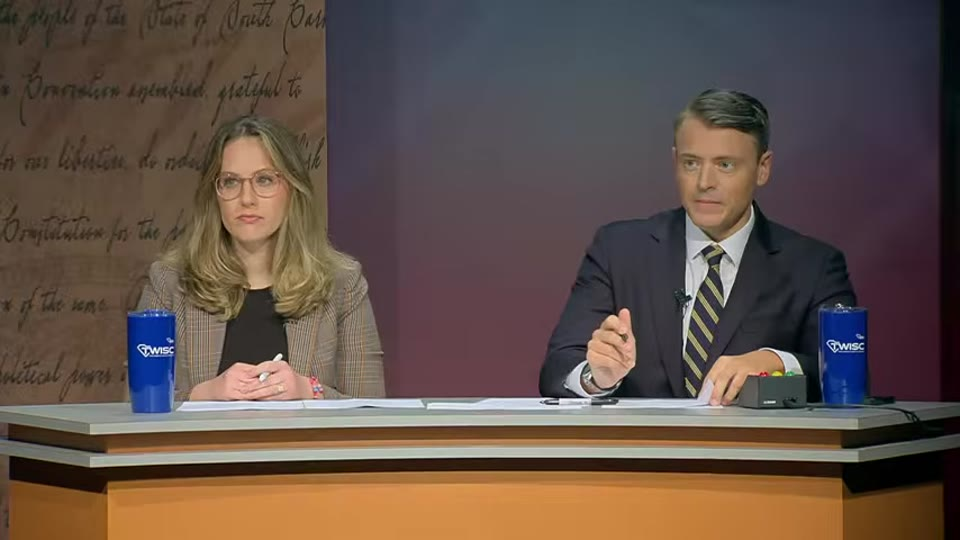
00:10:24.567 安德鲁斯 / Andrews · 0.394FULL DEBATE: Vote for America: South Carolina Republican Senate Runoff Debate | NEWSMAX
 00:01:03.197 格雷厄姆 / Graham · 0.514
00:01:03.197 格雷厄姆 / Graham · 0.514 00:01:23.750 格雷厄姆 / Graham · 0.610
00:01:23.750 格雷厄姆 / Graham · 0.610
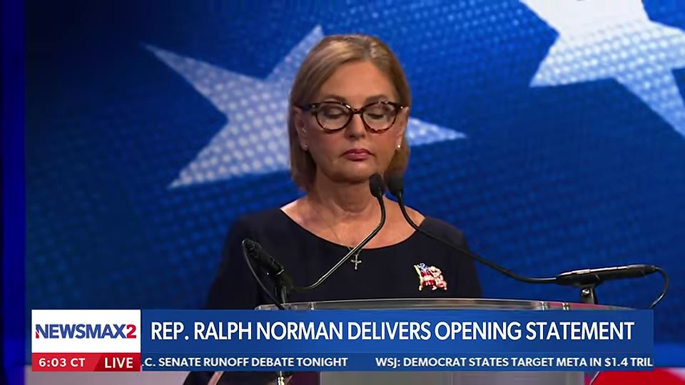
00:02:40.827 格雷厄姆 / Graham · 0.643
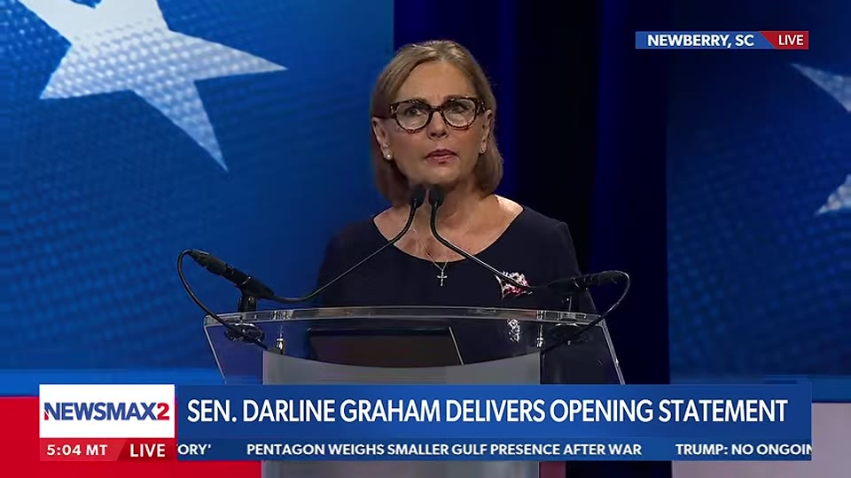
00:04:10.984 格雷厄姆 / Graham · 0.588Sen. Graham, Rep. Norman trade jabs over who they're each receiving support from
 00:00:00.167 格雷厄姆 / Graham · 0.569
00:00:00.167 格雷厄姆 / Graham · 0.569
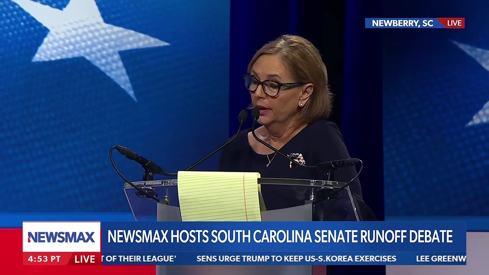
00:00:50.651 格雷厄姆 / Graham · 0.613
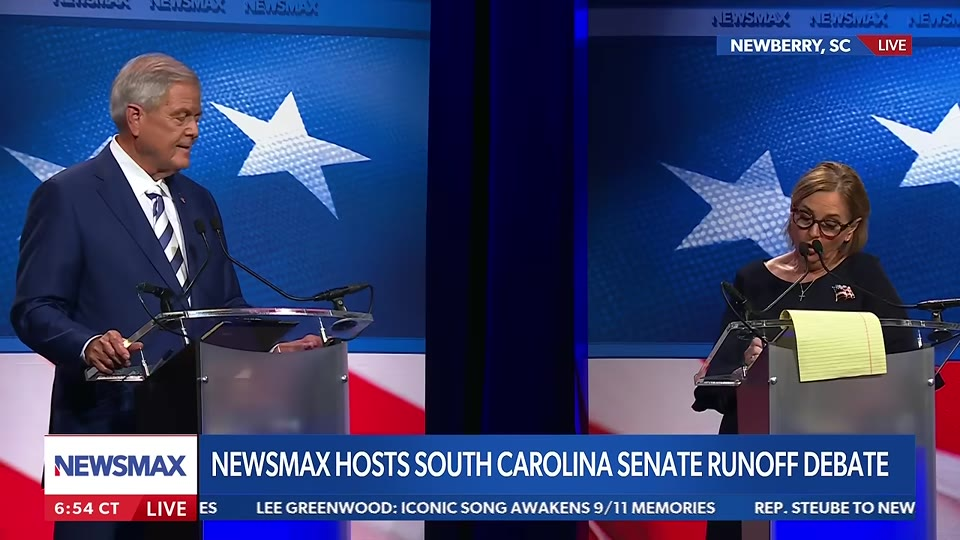
00:00:59.259 格雷厄姆 / Graham · 0.479 00:01:24.418 格雷厄姆 / Graham · 0.580
00:01:24.418 格雷厄姆 / Graham · 0.580SC Senate debate: Andrews, Graham and Whitner clash on gas, debt

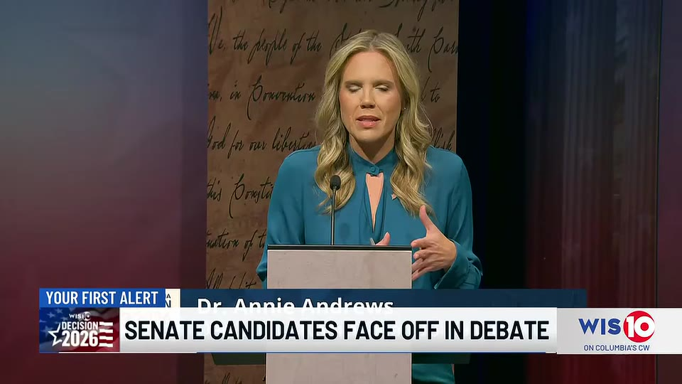
00:00:40.307 安德鲁斯 / Andrews · 0.634 00:01:03.697 安德鲁斯 / Andrews · 0.385
00:01:03.697 安德鲁斯 / Andrews · 0.385 00:01:23.450 格雷厄姆 / Graham · 0.635
00:01:23.450 格雷厄姆 / Graham · 0.635Senate candidates debate economy, war on Iran, AI and more in South Carolina
 00:00:39.640 格雷厄姆 / Graham · 0.648
00:00:39.640 格雷厄姆 / Graham · 0.648
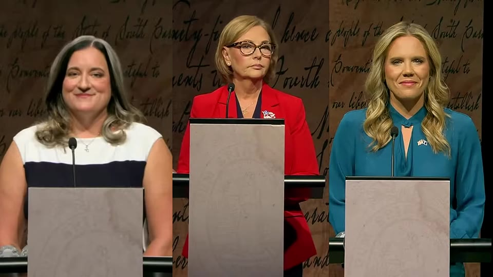
00:00:56.990 安德鲁斯 / Andrews · 0.699 00:01:03.964 格雷厄姆 / Graham · 0.610
00:01:03.964 格雷厄姆 / Graham · 0.610
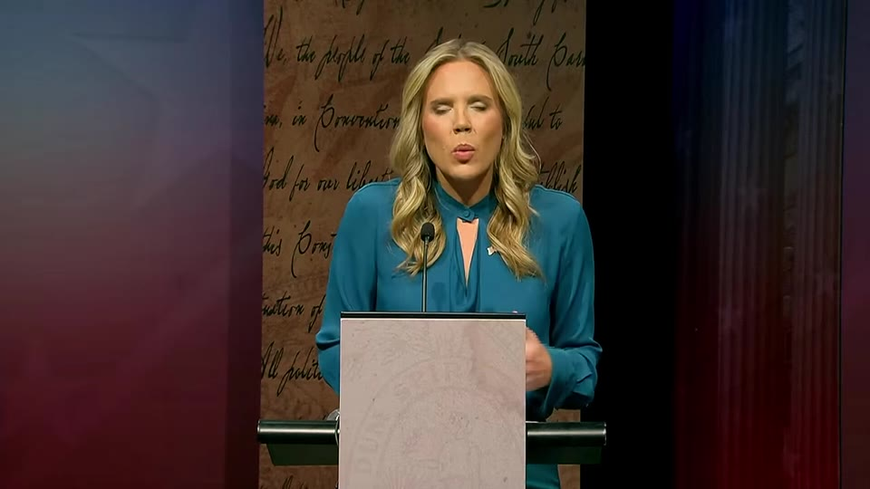
00:01:28.255 安德鲁斯 / Andrews · 0.626Annie Andrews Launch Video: "Unafraid"
00:00:02.711 安德鲁斯 / Andrews · 0.398 00:00:06.924 安德鲁斯 / Andrews · 0.544
00:00:06.924 安德鲁斯 / Andrews · 0.544


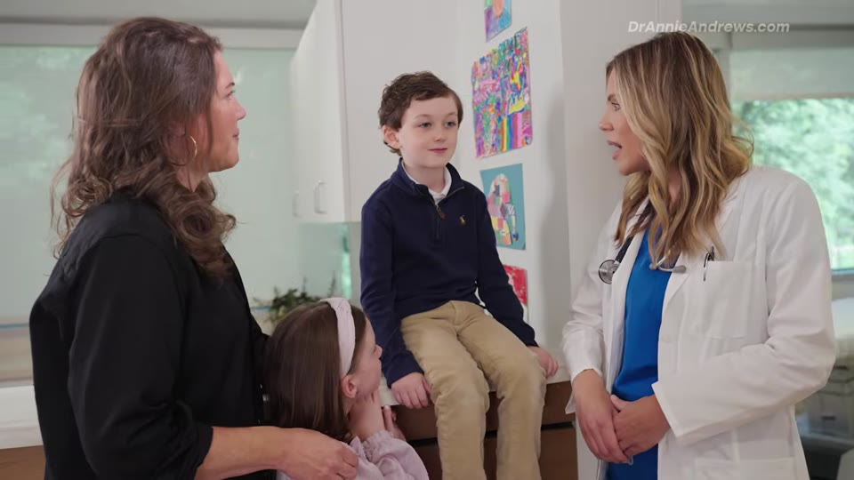
00:00:04.963 安德鲁斯 / Andrews · 0.44100:00:06.924 安德鲁斯 / Andrews · 0.544
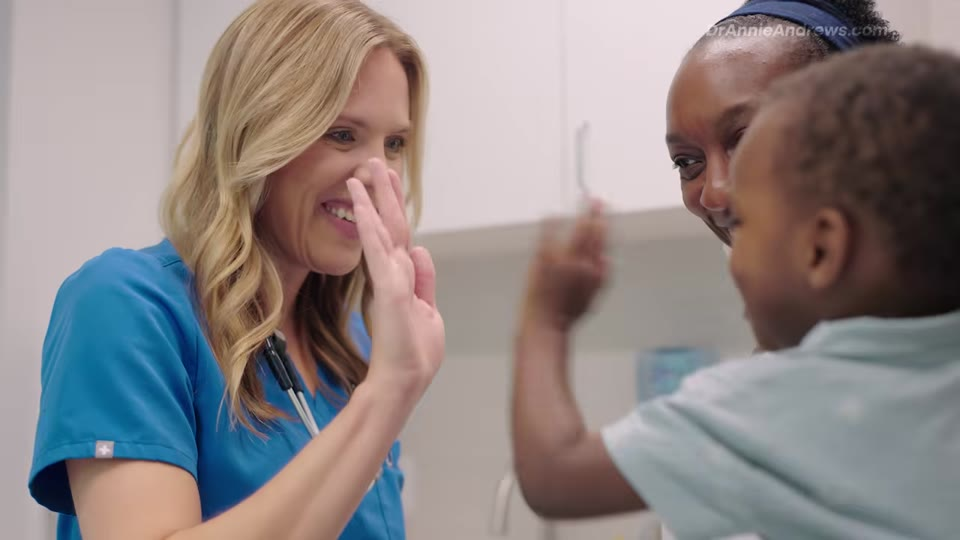
00:00:08.342 安德鲁斯 / Andrews · 0.533South Carolina doctor mounts Senate bid against Lindsey Graham: "I don't mind being an underdog"
 00:00:28.629 安德鲁斯 / Andrews · 0.440
00:00:28.629 安德鲁斯 / Andrews · 0.440
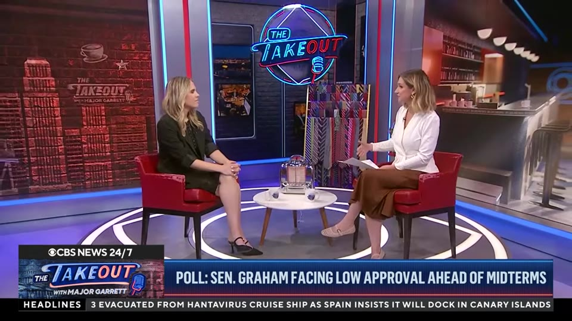
00:00:39.072 安德鲁斯 / Andrews · 0.438 00:00:51.752 安德鲁斯 / Andrews · 0.654
00:00:51.752 安德鲁斯 / Andrews · 0.654
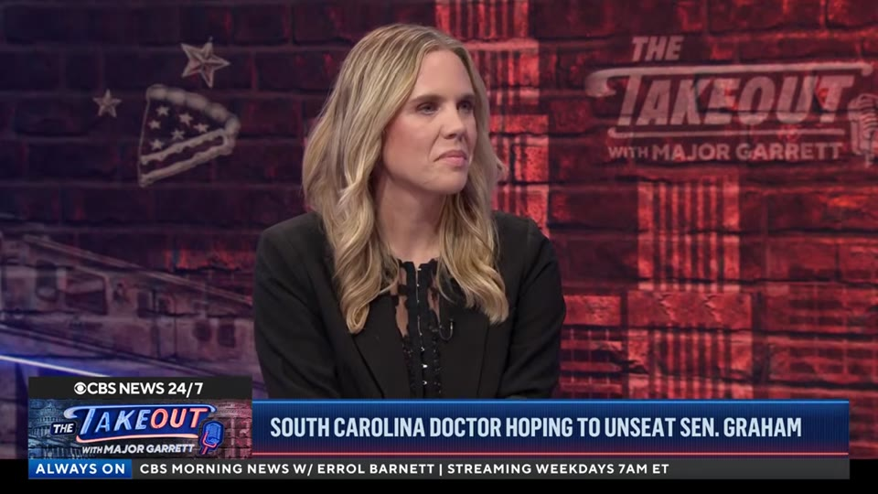
00:01:25.185 安德鲁斯 / Andrews · 0.700Annie Andrews gives speech after winning Democratic nomination for US Senate
S.C. Democratic U.S. Senate Nominee Dr. Annie Andrews Kicks Off 'Gas, Grits, and Groceries' Tour
Dr. Annie Andrews joins WBTV's streaming newscast for a live interview

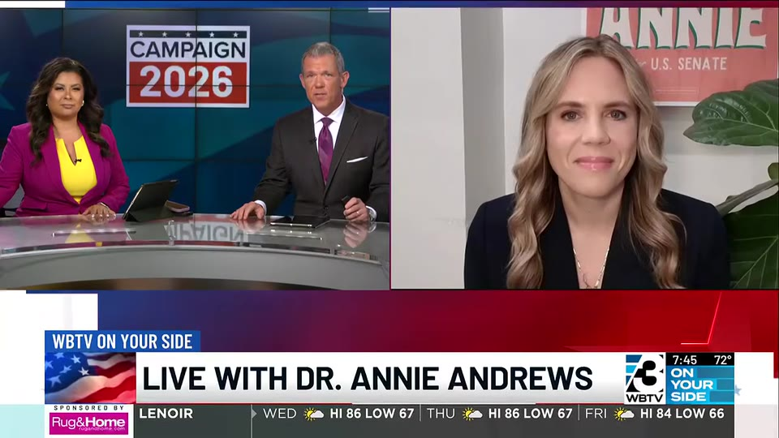
00:00:20.487 安德鲁斯 / Andrews · 0.742
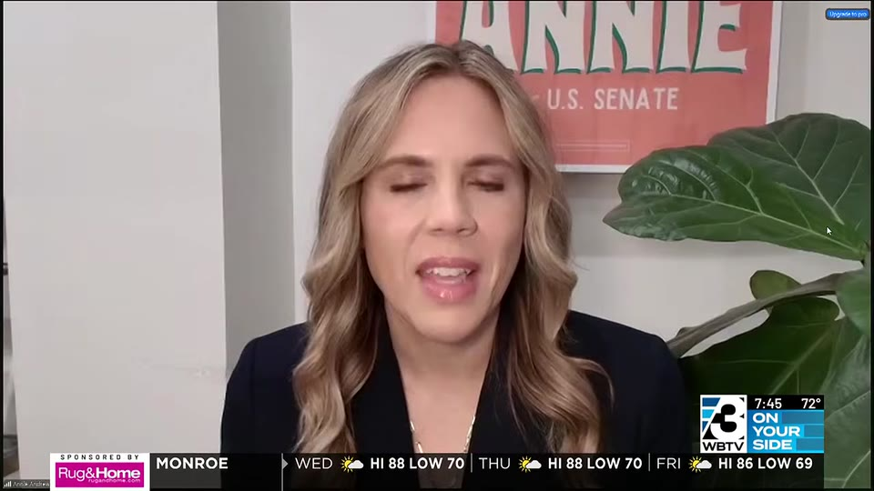
00:00:36.470 安德鲁斯 / Andrews · 0.708 00:01:18.045 安德鲁斯 / Andrews · 0.645
00:01:18.045 安德鲁斯 / Andrews · 0.645 00:01:43.737 安德鲁斯 / Andrews · 0.637
00:01:43.737 安德鲁斯 / Andrews · 0.637Full speech: Annie Andrews projected winner in South Carolina Senate race
 00:12:02.855 无人脸 / no face
00:12:02.855 无人脸 / no faceAnnie Andrews addresses supporters after projected win in South Carolina Senate race
Democrat Annie Andrews running to flip a Senate seat in deep-red South Carolina
00:00:17.851 安德鲁斯 / Andrews · 0.525


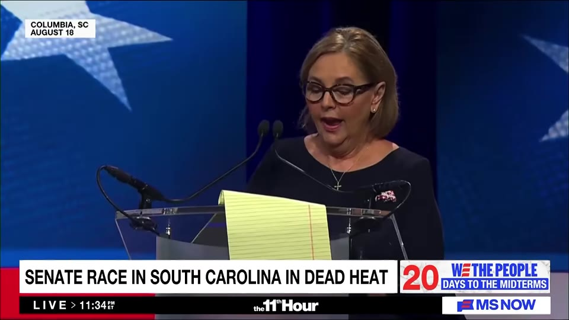
00:00:50.117 格雷厄姆 / Graham · 0.702
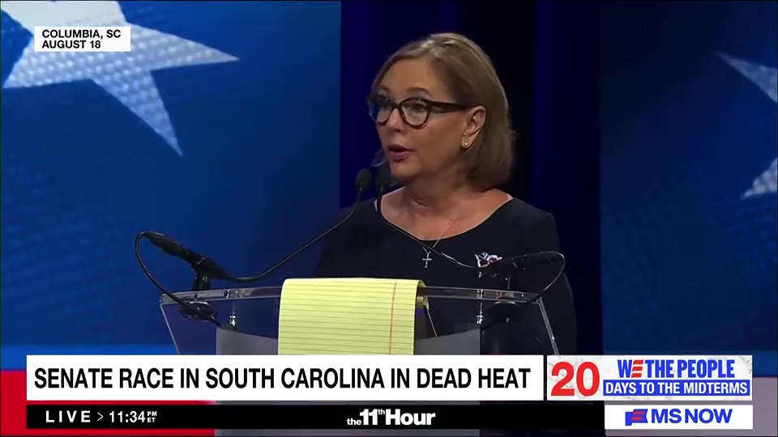
00:00:59.326 格雷厄姆 / Graham · 0.608
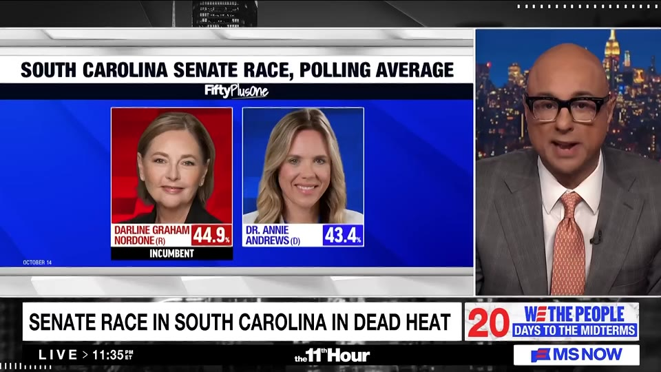
00:02:04.591 格雷厄姆 / Graham · 0.911Democrat Annie Andrews projected to win South Carolina Senate seat
 00:00:56.657 安德鲁斯 / Andrews · 0.415
00:00:56.657 安德鲁斯 / Andrews · 0.415Darline Graham Nordone appointed to fill Lindsey Graham's seat | full video


Darline Graham sworn in as U.S. senator, replacing her late brother Lindsey

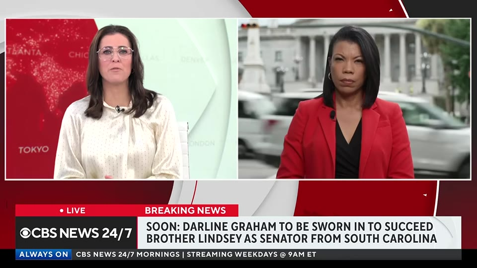
00:00:42.676 未识别 / unidentified 00:00:47.881 未识别 / unidentified
00:00:47.881 未识别 / unidentified 00:01:03.397 未识别 / unidentified
00:01:03.397 未识别 / unidentified 00:03:38.518 未识别 / unidentified
00:03:38.518 未识别 / unidentifiedDarline Graham Nordone, sister of Lindsey Graham, appointed interim senator

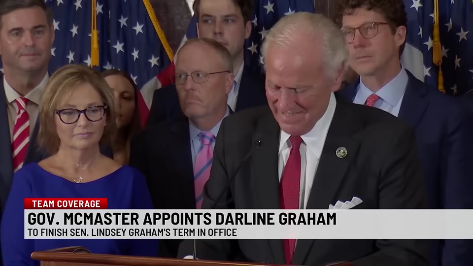
00:00:47.147 格雷厄姆 / Graham · 0.638 00:01:03.363 格雷厄姆 / Graham · 0.487
00:01:03.363 格雷厄姆 / Graham · 0.487
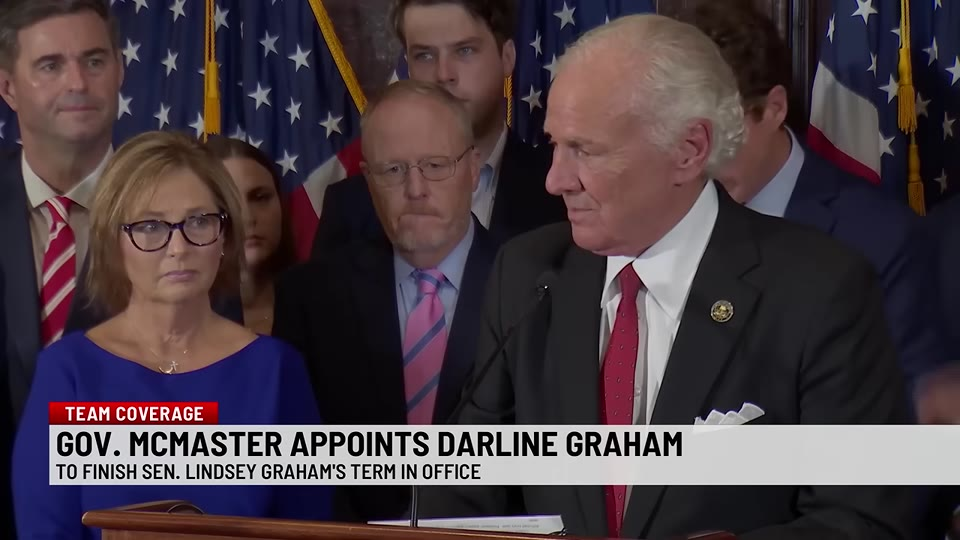
00:01:08.902 格雷厄姆 / Graham · 0.588 00:01:22.216 格雷厄姆 / Graham · 0.618
00:01:22.216 格雷厄姆 / Graham · 0.618Lindsey Graham's sister, Darline, announces bid for full Senate term in South Carolina

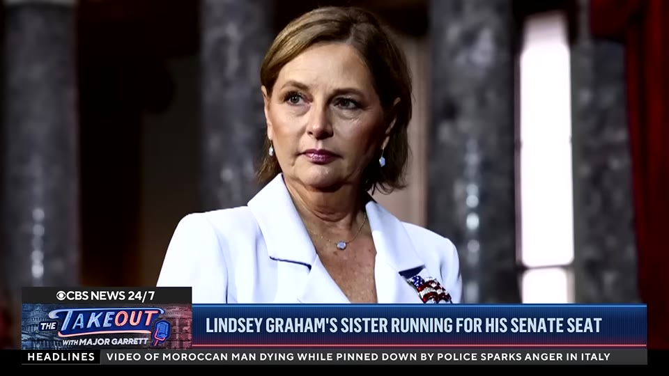
00:00:10.444 格雷厄姆 / Graham · 0.832Senator Darline Graham Primary Night Speech
Sen. Darline Graham delivers remarks on special GOP primary election night
 00:00:00.033 无人脸 / no face
00:00:00.033 无人脸 / no faceFULL SPEECH: Darline Graham Speaks to an Excited Myrtle Beach Crowd Before President Trump - 8/21/26
Sen. Darline Graham Speaks at Trump Myrtle Beach Rally | S.C. 2026
Graham wins South Carolina Republican Senate primary runoff, NBC News projects

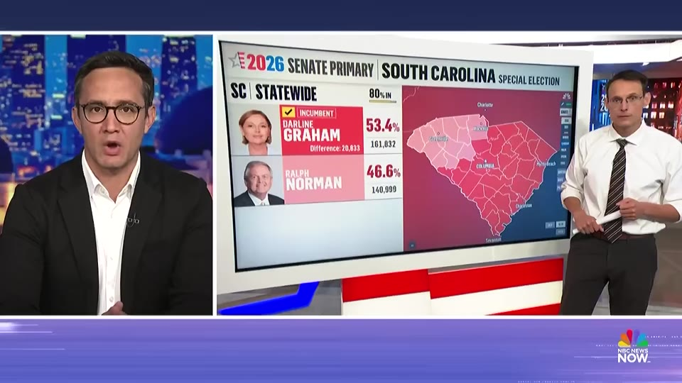
00:00:20.921 格雷厄姆 / Graham · 0.542 00:00:29.196 格雷厄姆 / Graham · 0.609
00:00:29.196 格雷厄姆 / Graham · 0.609
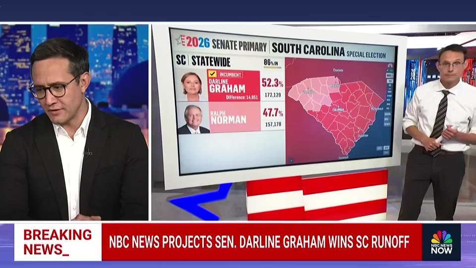
00:02:14.101 格雷厄姆 / Graham · 0.613
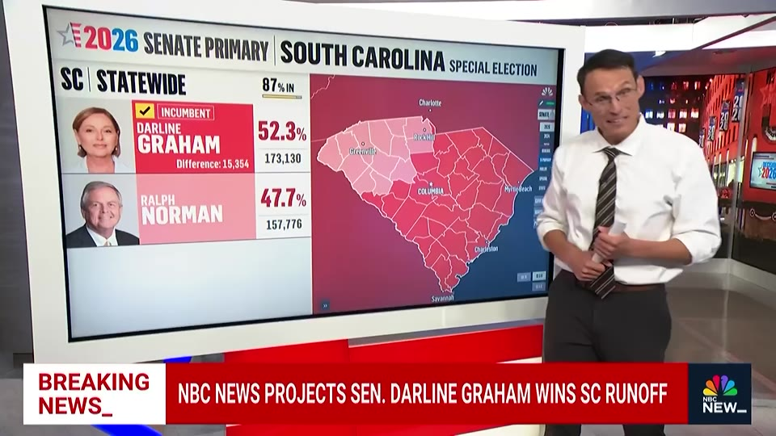
00:02:32.452 格雷厄姆 / Graham · 0.640Sen. Darline Graham (R-SC) Full Concession Speech
Norman, Graham advance to South Carolina GOP Senate runoff
 00:00:22.990 格雷厄姆 / Graham · 0.600
00:00:22.990 格雷厄姆 / Graham · 0.600 00:02:06.293 格雷厄姆 / Graham · 0.534
00:02:06.293 格雷厄姆 / Graham · 0.534 00:02:17.871 格雷厄姆 / Graham · 0.637
00:02:17.871 格雷厄姆 / Graham · 0.637
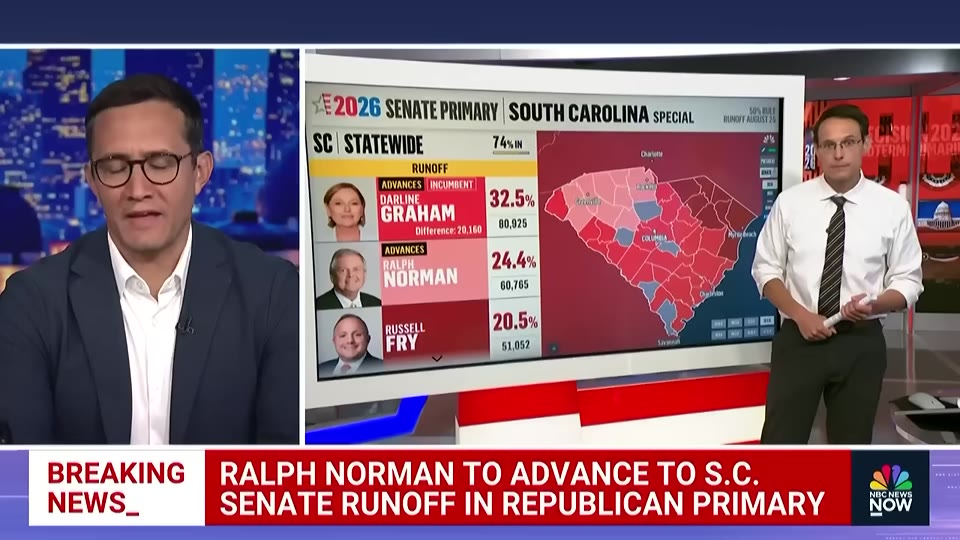
00:03:20.367 格雷厄姆 / Graham · 0.540South Carolina Primary Election

Hecklers Interrupt President Donald Trump Rally In Myrtle Beach For Darline Graham | DWS News | AC14
 00:00:04.304 无人脸 / no face
00:00:04.304 无人脸 / no face 00:00:07.941 未识别 / unidentified
00:00:07.941 未识别 / unidentified 00:00:15.616 未识别 / unidentified
00:00:15.616 未识别 / unidentified 00:00:29.229 未识别 / unidentified
00:00:29.229 未识别 / unidentified